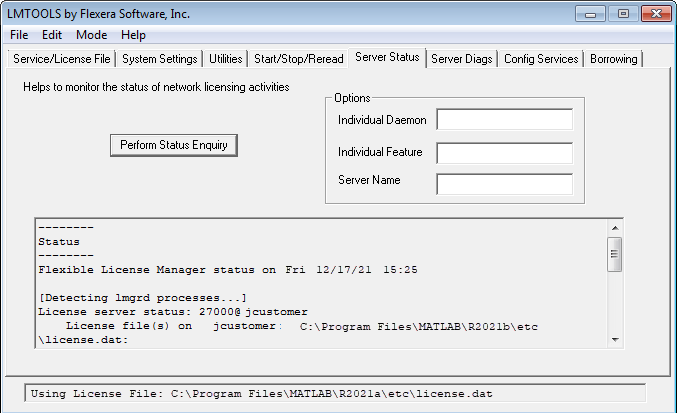

Monitor Network License Manager
This topic describes several utilities that you can use to manage the network license
manager. For detailed information about these utilities, see the License
Administration Guide, included in PDF format in your MATLAB® installation
(<matlabroot>\etc\LicenseAdministration.pdf).
LMTOOLS is available for Windows® computers only. All operating systems can use the command line utilities.
Using LMTOOLS (Windows Only)
On Windows computers, FlexNet® Publisher licensing includes a tool, called LMTOOLS. Using LMTOOLS, you can perform many license management tasks, such as:
Get the status of the network license manager.
Start and stop the network license manager.
Configure the network license manager as a service.
To illustrate, the following example shows how to use LMTOOLS to see the current status of the network license manager:
Start LMTOOLS by double-clicking the
lmtools.exefile in the<matlabroot>\etc\<arch>folder, where<matlabroot>is your MATLAB installation folder and<arch>is a platform-specific subfolder, such aswin64.Select the Server Status tab.
Click the Perform Status Enquiry button. LMTOOLS displays the same information as if you had entered the command
lmutil lmstat -a.
Using Command-Line Utilities
FlexNet licensing includes a set of license management utilities that you can use to start, stop, and monitor the network license manager.
On Windows computers, FlexNet packages all the utilities in a single, command-line executable called
lmutil.exe. This program is available in the
<matlabroot>\etc\<arch> folder, where
<matlabroot> is your MATLAB installation folder and <arch> is a
platform-specific subfolder, such as win64. For example, to run a
status check of the network license manager, open a DOS command window and run
lmutil specifying lmstat as an
argument:
lmutil lmstat -a -c "C:\Program Files\MATLAB\R2025b\etc\license.dat"
The -a option requests a verbose listing. You must also include
the-c option to specify the license file to use. You must use
this option with every lmutil option. If your installation path
contains spaces, enclose the path in quotes. The following listing is a portion of
the information returned.
lmutil - Copyright (c) 1989-2018 Flexera Software Inc. All Rights Reserved.
Flexible License Manager status on Fri 12/17/2021 10:11
[Detecting lmgrd processes...]
License server status: 27000@lmsvr-837962
License File(s) on lmsvr-837962: C:\Program Files\MATLAB\R2025b\etc\license.dat:
lmsvr-837962: license server UP (MASTER) v.11.16.2
Vendor daemon status (on lmsvr-837962):
MLM: UP v11.16.2
Feature usage info:
Users of MATLAB: (Total of 5 licenses available)
Users of SIMULINK: (Total of 5 licenses available)
Users of Control_Toolbox: (Total of 5 licenses available)
Users of Identification_Toolbox: (Total of 5 licenses available)
To view a list of all the utilities in the lmutil package,
type:
lmutil -h
To get help for a particular utility, type the name of the utility with the
-h option, as in the following example:
lmutil lmstat -h
On Linux and macOS computers, these license management utilities are individual
executables, available in the
matlabroot/etclmstat utility, as follows:
lmstat -almutil - Copyright (c) 1989-2018 Flexera Software Inc. All Rights Reserved.
Flexible License Manager status on Fri 12/17/2021 10:11
License server status: 27000@lmsvr-837962
License File(s) on lmsvr-837962: /usr/local/MATLAB/R2025b/etc/license.dat:
lmsvr-837962: license server UP (MASTER) v.11.16.2
Vendor daemon status (on lmsvr-837962):
MLM: UP v11.16.2
Feature usage info:
Users of MATLAB: (Total of 5 licenses available)
Users of SIMULINK: (Total of 5 licenses available)
To get help for a particular utility, use the -h option, as in
the following example:
lmstat -h
The following table lists the names of the most useful license management tools included.
| Utility | Description |
|---|---|
| Diagnose license checkout problems. |
| Shut down all license daemons (both
|
| |
| Make the network license manager reread the license file and start any new vendor daemons. Note When you use |
| Display the status of all network licensing activities. |
| Switch to another report log file. |
| Determine the version of a library or binary file. |
Acknowledgments
This topic lists the copyright owners of content used in the network license manager vendor daemon.
MD5
MD5 derived from RSADSI MD5 Message-Digest Algorithm. Copyright (C) 1991-2, RSA Data Security, Inc. Created 1991. All rights reserved.
License to copy and use this software is granted provided that it is identified as the "RSA Data Security, Inc. MD5 Message-Digest algorithm" in all material mentioning or referencing this software or this function.
License is also granted to make and use derivative works provided that such works are identified as "derived from the RSA Data Security, Inc. MD5 Message-Digest Algorithm" in all material mentioning or referencing the derived work.
RSA Data Security, Inc. makes no representations concerning either the merchantability of this software or the suitability of this software for any particular purpose. It is provided "as is" without express or implied warranty of any kind.
These notices must be retained in any copies of any part of this documentation and/or software.